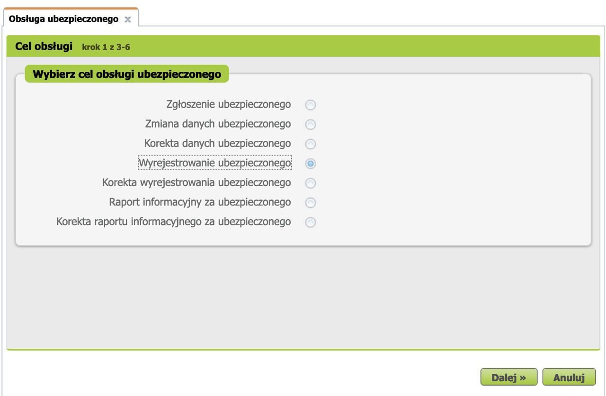
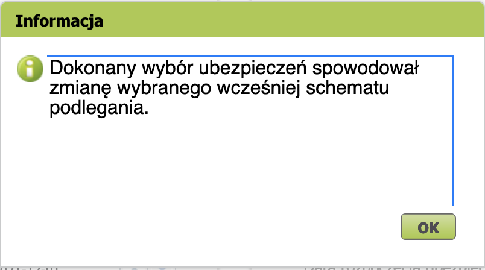

ZUS: переход с "Ulga na start" на "Obniżone składki"
После 6 полных месяцев использования Ulga na start можно воспользоваться возможностью уплаты пониженных взносов ZUS (Obniżone składki) в течение 24 полных месяцев.
Сколько действует "Ulga na start"
Если вы начали свой бизнес первого числа месяца, то в этом случае льгота будет действовать в течение 6 месяцев, включая месяц, в котором был зарегистрирован бизнес.
В случае, если бизнес был зарегистрирован не первым числом месяца, то льгота будет действовать 6 полных месяцев + неполный месяц, в котором был зарегистрирован бизнес.
Когда переходить на "Obniżone składki ZUS"
Первым днём, с которого начнет действовать Obniżone składki ZUS всегда будет первое число месяца.
На подачу обоих документов даётся 7 дней. Таким образом, переход нужно завершить до 8-го числа.
Что нужно сделать
- Сняться с учета в ZUS с помощью бланка ZUS ZWUA с кодом, начинающимся с 05 40.
- Зарегистрироваться для страхования по сниженным страховым взносам с помощью бланка ZUS ZUA с кодом, начинающимся с 05 70.
1. Снятие с учета (ZUS ZWUA) с кодом 05 40
Шаг 1
На странице zus.pl во вкладке e-Płatnik нужно выбрать новый документ типа ZUS ZWUA, нажать Wybierz и в появившемся диалоге нажать Przejdz do kreatora.

Далее как Cel obsługi нужно выбрать пункт Wyrejestrowanie ubezpieczonego.

Шаг 2
Далее нужно указать причину и дату снятия с учета.
В поле Przyczyna wyrejestrowania нужно выбрать 600 - inna przyczyna wyrejestrowania, а в поле Data wyrejestrowania – первое число месяца. Остальные поля нужно оставить пустыми.
Шаг 3
Далее необходимо выбрать лицо, снимаемое с учета с Kod tytułu ubezpieczenia 054000 и нажать Dalej.
Шаг 4
Проверить, верифицировать и выслать документ в ZUS.
2. Регистрация (ZUS ZUA) с кодом 05 70
Шаг 1
На странице zus.pl во вкладке e-Płatnik нужно выбрать новый документ типа ZUS ZUA, нажать Wybierz и в появившемся диалоге нажать Przejdz do kreatora.
Далее как Cel obsługi нужно выбрать пункт Zgłoszenie ubezpieczonego.
Шаг 2
Заполнить Dane identyfikacyjne и Dane ewidencyjne в обоих вкладках. Можно загрузить уже имеющиеся в ZUS данные нажав "Wybierz z kartoteki".

Шаг 3
Проверить adres zameldowania.

Проверить adres zamieszkania.
Шаг 4
Нажать Dodaj kod tytułu ubezpieczenia.

Выбрать Kod tytułu ubezpieczenia 05 70 и указать дату первым числом месяца (то же число, что и для ZUS ZWUA).
Выбрать нужные пункты в секциях Obowiązkowe ubezpieczenia spoleczne и Dobrowolne ubezpieczenia spoleczne. Chorobowa складка (на больничные в случае болезни) - опциональна. Можно снизить зус на 20+ злотых в месяц если отказаться от этой складки, но тогда вы не сможете получить компенсацию больничных в случае болезни.
Выбрать Kod wykonywanego zawodu.
Например:
- 251401 Programista.
- 251402 Programista aplikacji mobilnych.
- 251903 Tester oprogramowania komputerowego.
- 243106 Specjalista do spraw marketingu i handlu.
Все коды можно найти по ссылке.
Нажать "Dodaj".
В появившимся диалоге нажать "ОК".

Выбрать только что созданного ubezpieczonego c кодом 057000.
Шаг 5
Проверить, верифицировать и выслать документ в ZUS.